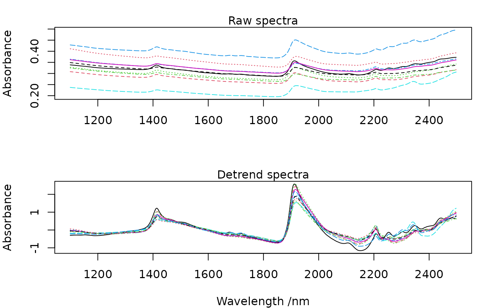

Applies a row-wise polynomial detrending transformation to spectral data. Optionally, an SNV transformation is applied prior to fitting, as prescribed by Barnes et al. (1989).
Usage
detrend(X, wav, p = 2, snv = TRUE, method = c("poly", "raw"))Arguments
- X
a numeric matrix or vector to process (optionally a data frame that can be coerced to a numerical matrix)
- wav
the wavelengths/ band centers.
- p
an integer larger than 1 indicating the polynomial order (default is 2, as in the original paper of Barnes et al., 1989).
- snv
a logical indicating whether an SNV transformation should be applied to each spectrum before polynomial fitting. Default is
TRUE, which reproduces the procedure of Barnes et al. (1989). Set toFALSEto perform pure polynomial detrending without prior normalisation.- method
a character string specifying the polynomial basis used for fitting. Either
"poly"(default) or"raw"."poly"usespolyto construct an orthogonal polynomial basis, as in the original implementation."raw"uses z-scored wavelengths raised to successive integer powers (\(\tilde\lambda^0, \tilde\lambda^1, \ldots, \tilde\lambda^p\)), where \(\tilde\lambda = (\lambda - \bar\lambda) / \mathrm{sd}(\lambda)\). The two methods are not numerically equivalent;"raw"is provided for interoperability with implementations that use a raw power basis.
Details
The detrend is a row-wise transformation that allows to correct for wavelength-dependent scattering effects (variations in curvilinearity). A \(p\) order polynomial is fit for each spectrum (\(x_i\)) using the vector of bands (\(\lambda\), e.g. wavelengths) as explanatory variable as follows:
\[x_i = a\lambda^p + ... + b\lambda + c + e_i\]
were a, b, c are estimated by least squares, and \(e_i\) are the spectral residuals of the least square fit. The residuals of the \(i\)th correspond to the \(i\)th detrended spectrum.
To remain faithful to Barnes et al. (1989), snv = TRUE (the default)
applies an SNV transformation to each spectrum before polynomial fitting.
Users who wish to apply detrending independently of SNV — for example, as a
separate step in a preprocessing pipeline — should set snv = FALSE.
References
Barnes RJ, Dhanoa MS, Lister SJ. 1989. Standard normal variate transformation and de-trending of near-infrared diffuse reflectance spectra. Applied spectroscopy, 43(5): 772-777.
Author
Antoine Stevens and Leonardo Ramirez-Lopez
Examples
data(NIRsoil)
wav <- as.numeric(colnames(NIRsoil$spc))
# conversion to reflectance
opar <- par(no.readonly = TRUE)
par(mfrow = c(2, 1), mar = c(4, 4, 2, 2))
# plot of the 10 first spectra
matplot(wav, t(NIRsoil$spc[1:10, ]),
type = "l",
xlab = "",
ylab = "Absorbance"
)
mtext("Raw spectra")
det <- detrend(NIRsoil$spc, wav)
matplot(wav, t(det[1:10, ]),
type = "l",
xlab = "Wavelength /nm",
ylab = "Absorbance"
)
mtext("Detrend spectra")

par(opar)